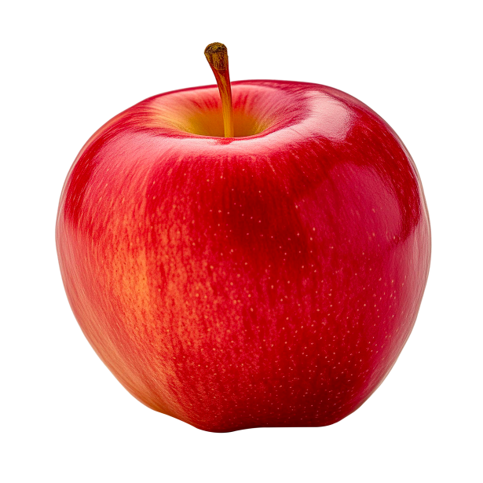

JPG Format Example

About this image
This photos shows apple. it is a really healthy food. it contains antioxidants, fiber(aids digestion), water. Apple stabilizes blood sugar, lowers cholesterol. reduces blood pressure, eases inflammation, boosts your microbiome. This photo doesn't have a background because it is a png file
Why JPG Format?
PNG stands for Portable Network Graphic. PNG include: Supports millions of colors Supports multiple levels of transparency Supports interlacing Uses lossless compression Combines the best of GIF & JPEG
Image source: publicdomainpictures.net ↗